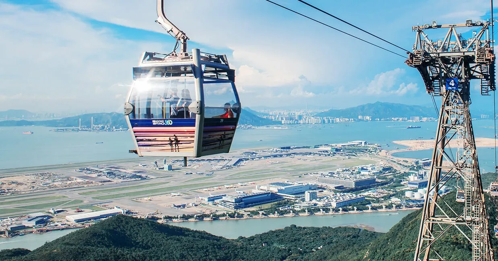
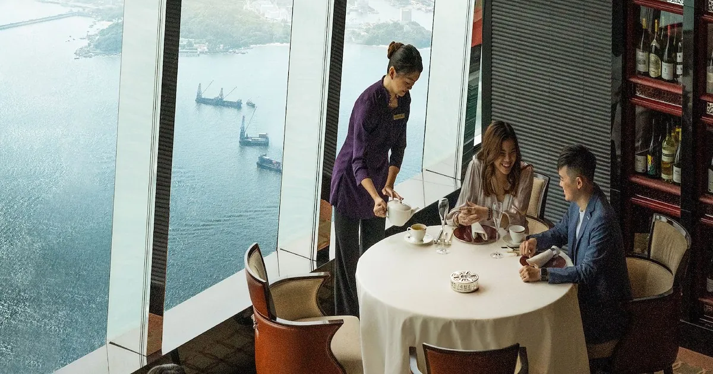
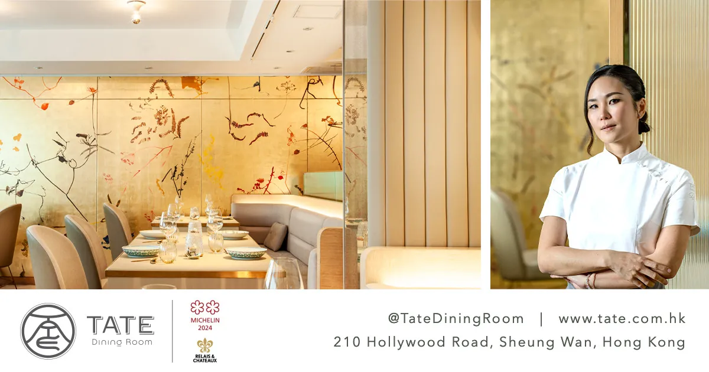
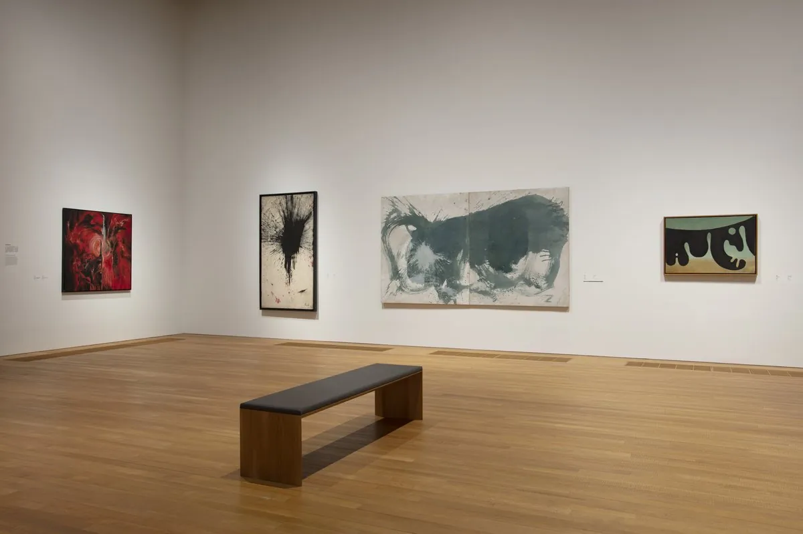

Hong
Kong

The city that earns a Michelin dinner and a HK$200 dim sum breakfast in the same trip
Seven three-star restaurants. One harbour. Twenty minutes on the MTR between everything. Here is how to spend 48 hours without wasting a single meal.
The single thread tying Hong Kong's fine-dining scene to everything else is geography. The MTR connects Victoria Harbour, Kowloon, and Causeway Bay in under 20 minutes, and one Octopus card covers every mode from the Star Ferry crossing (~HK$4–6.5)[1] to buses, trams, and the Airport Express. Once the dinner reservation is confirmed, use the restaurant's side of the harbour as your anchor — then scaffold everything else outward.
A Kowloon-side dinner pairs naturally with the Tsim Sha Tsui promenade and the free Symphony of Lights at 8pm. A Hong Kong Island dinner earns you a morning on Cat Street, an afternoon in Sheung Wan's galleries, and a dusk Star Ferry crossing with the skyline behind you. These are not itinerary suggestions — they are the logic of the city itself.
Five of the seven three-star restaurants serve Asian-cuisine menus.[2] Three are Cantonese. This is not a coincidence. Hong Kong's best affordable eating is also Cantonese: Tim Ho Wan holds Bib Gourmand 2026 status at under HK$400 a head. A splurge dinner and a HK$200 dim sum breakfast are not in tension — they are the whole point.
Three Michelin Stars
7T'ang Court
Heritage Cantonese classics executed with opulent mastery. Choreographed service, lavish interiors, and the prestige of Peking Road — an iconic choice for a formal Kowloon-side dinner.[13] Anchor for the TST promenade + Symphony of Lights pairing.
Amber
Entirely gluten- and dairy-free menus; ingredient-led French gastronomy with one of Asia's most progressive sustainability commitments. Chef Richard Ekkebus has made Amber a benchmark for the entire region.[10]
Sushi Shikon
One of the few sushi counters outside Japan to hold three stars. An intimate 8-seat hinoki counter: 6 appetisers, 10 nigiri, soup, dessert. The lunch slot at half the price is one of the city's best-kept value secrets.[3]
Ta Vie 旅
Seasonal tasting menu fusing French technique with Japanese sensibility; sourdough and cultured butter made in-house daily. Menus evolve monthly around premier ingredients from both culinary traditions.[14]
Forum
Built on Chef Yeung Koon-yat's legendary braised abalone — a dish served to world leaders. Over four decades of Cantonese authority; the legacy lives on after the chef's 2023 passing.[12] Anchors the Causeway Bay side of the island.
Caprice
Flagship French dining celebrated for its artisanal cheese cellar and harbour-view setting. Consistently ranked among HK's premier Western restaurants; the grandest room in Central.[11]
⚠ Skip this trip: 8½ Otto e Mezzo Bombana (★★★ Italian, the first Italian restaurant outside Italy to hold three stars) is currently under renovation at The Landmark. Verify before booking.[15]
Two Michelin Stars
13
Tin Lung Heen 天龍軒
Cantonese dim sum and cuisine at the top of the world's highest hotel. Chef Paul Lau Ping-Lui won the first-ever Michelin Mentor Chef Award at the 2026 ceremony — arguably the weekend's most photogenic dining room.[27]

TATE Dining Room
French technique interwoven with Chinese cultural threads in a jewel-box neighbourhood space on Hollywood Road. One of Hong Kong's most personal fine-dining experiences — the Friday/Saturday lunch at HK$1,180 is an exceptional entry point.[26]
L'Atelier de Joël Robuchon RETURNED
Anchor by Harbour Side
Kowloon Side
Tsim Sha Tsui & beyond
- Star Ferry to Central or back (~HK$4–6.5)
- TST promenade + free Symphony of Lights at 8pm
- ICC tower — Tin Lung Heen dim sum at 393m
- Mong Kok: Ladies' Market, Goldfish Market, Flower Market
- Wong Tai Sin Temple + Lion Rock hike
- M+ and Palace Museum in West Kowloon
Hong Kong Island Side
Central, Sheung Wan & beyond
- Cat Street (Upper Lascar Row) antiques lane
- Man Mo Temple, Tai Kwun heritage centre (free)
- TATE Dining Room on Hollywood Road, Sheung Wan
- Victoria Peak — Peak Tram HK$108 return; go at dawn or after 9pm
- Temple Street Night Market for a nightcap of egg waffles
- Tim Ho Wan Sham Shui Po for a Bib Gourmand breakfast
A Sample Weekend
Eve
Arrive & Orient
Octopus card at the airport; Airport Express to town (~24 min, HK$130). Walk the TST promenade for the 8pm Symphony of Lights — free, 10 minutes, sets the scale of the harbour.
Dawn
Hike Before the Heat
Dragon's Back ridge (~4 hrs, bus 9 from Shau Kei Wan MTR) or the flat Lugard–Harlech Road loop at Victoria Peak — both done before 9am to beat humidity.
Morning
Bib Gourmand Brunch
Tim Ho Wan, Sham Shui Po — baked char siu buns and congee for under HK$400. Michelin Bib Gourmand status 17 years running. The price contrast with tonight's dinner is the whole thesis.
Afternoon
Sheung Wan Wander
Cat Street antiques, Tai Kwun heritage centre (free, until 11pm), Man Mo Temple. Star Ferry across at dusk — HK$4.
Night
The Dinner
Culture or Island Escape
M+ (HK$190) and the Palace Museum (HK$50) share a campus in West Kowloon — a full morning. Or take the ferry to Lamma Island for the flat Family Trail and seafood at Sok Kwu Wan. If Big Buddha was skipped: Ngong Ping 360 cable car, HK$295 return.
Culture & Outdoors

M+
Asia's first global museum of contemporary visual culture. HK$190 / HK$100 concession; Fri open until 22:00. Closed Mon. The Body Transformed jewellery exhibition from the Met runs through Oct 2026 next door at the Palace Museum.
Dragon's Back & Hikes
The marquee ridge walk — Shek O Peak to Big Wave Bay, ~8.5km, ~4 hrs. Bus 9 from Shau Kei Wan MTR. For a flatter option: the Lugard–Harlech Road loop around Victoria Peak (free). Both beat the June heat if started before 7:30am.
Lamma & Lantau Islands
Lamma: ferry from Central Pier 4 (HK$17–25, 25–40 min), flat Family Trail, seafood at Sok Kwu Wan. Lantau: Ngong Ping 360 cable car + Big Buddha (HK$295 return), then bus 21 to Tai O stilt village — the two pair on a single trip.
Tai Kwun & Temples
Tai Kwun — former Central Police Station and prison, now an art and heritage centre; free, open until 11pm. Man Mo Temple (Hollywood Rd, free, 8am–6pm). Chi Lin Nunnery and Nan Lian Garden, Diamond Hill — Tang-dynasty timber complex; both free.
Star Ferry & Symphony of Lights
Best-value sightseeing in the city: HK$4–6.5 for a 10-minute Tsim Sha Tsui–Central crossing running until 11:30pm. The free nightly Symphony of Lights laser show starts at 8pm from the TST promenade. No ticket needed — position yourself near the Clock Tower.
Gallery Scene
Blue-chip galleries cluster in Central: Gagosian in the Pedder Building, Hauser & Wirth and David Zwirner in towers like H Queen's. Free entry; concierge at any high-end hotel has the current show list. The scene peaks during Art Basel Hong Kong — 27–29 March 2026 is past, but satellite shows run through April.